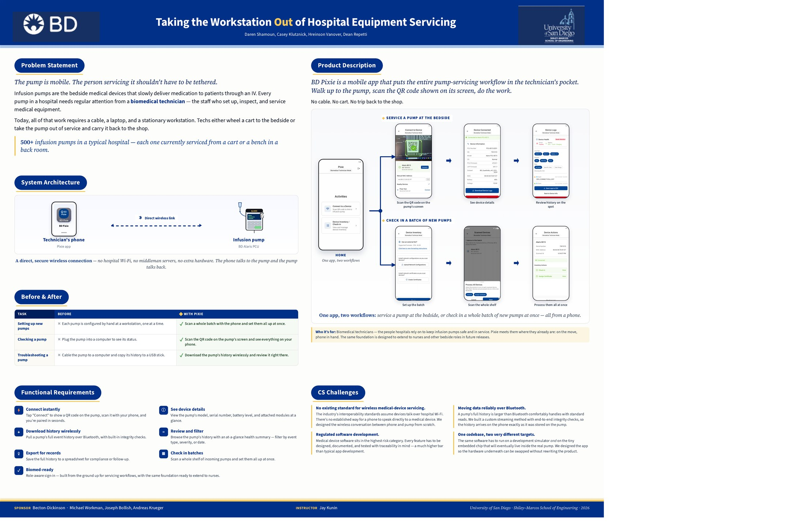
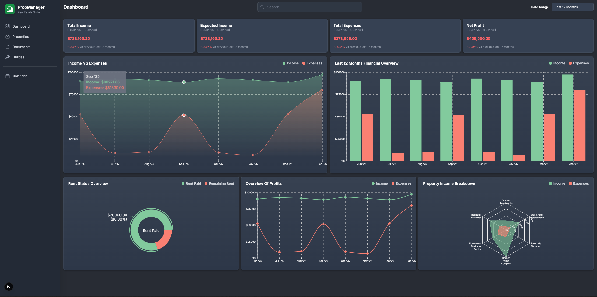
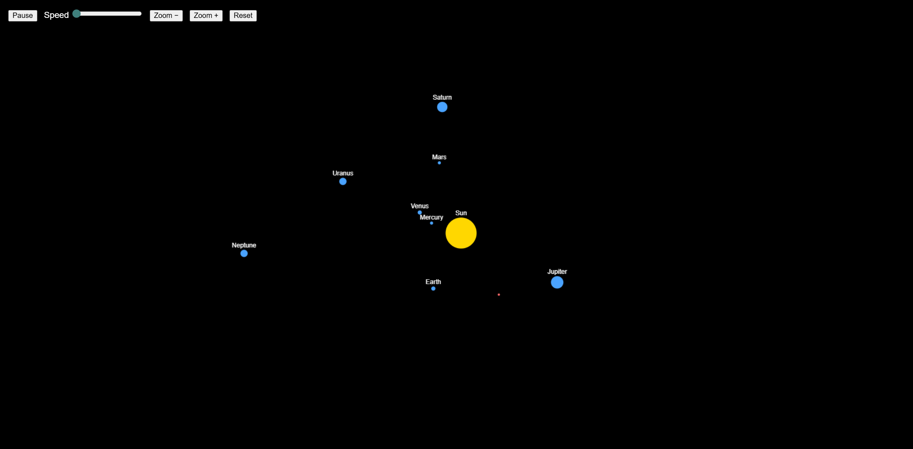
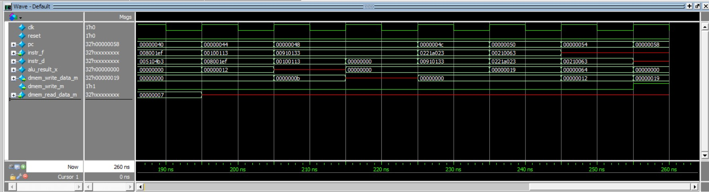

I build software end-to-end — from silicon to the browser.
Computer Science graduate from the University of San Diego (Magna Cum Laude). I've shipped everything from a pipelined RISC-V processor and BLE embedded systems up through full-stack web apps, real-time computer vision, and machine-learning pipelines — and I treat modern AI tooling as core engineering infrastructure, not autocomplete.
I'm Daren, a software engineer based in San Diego who likes building things end-to-end — from the database up through the UI, and just as happily down at the embedded and hardware layers.
Most recently I spent my senior year as a Software Engineer Intern at BD (Becton Dickinson), where I led the development of BD-Pixie, a Bluetooth Low Energy companion system for the BD Alaris infusion pump. Since 2022 I've also been the full-stack developer at Red Carpet Real Estate, where I built a Next.js and PostgreSQL app from scratch to replace the company's paper-based property management. Earlier I co-founded Dashbyte, an IT-services company where I deployed 50+ systems and shipped 10+ client sites, finished IBM's Full Stack certification, and spent six months as a NASA Community College Aerospace Scholar on a simulated Mars mission.
Next.js, React, Flask, PostgreSQL — real products for real clients.
A pipelined RISC-V CPU, a multithreaded web server, embedded BLE.
Real-time MediaPipe tracking, physics, and ambient IoT.
Leakage-safe ML pipelines; agentic AI as engineering infrastructure.
A few projects that show the range — from a medical-device BLE system to an in-browser physics engine to a CPU I built from logic gates up.
Senior capstone & software-engineering internship
A Bluetooth Low Energy companion system that lets biomedical technicians triage and provision BD Alaris infusion pumps right at the bedside, instead of the cart-laptop-cable workflow used to service them today.
What I built: as the BLE, mobile, and embedded lead I authored most of the implementation across three components — a React Native app, a Python BLE server, and a stripped package handed to BD's firmware team for the pump's embedded chip. I designed a custom BLE GATT protocol from scratch, including a notify-stream log-transfer protocol ~25–50× faster than naive reads with end-to-end CRC integrity, and led a major React Native New-Architecture upgrade.

Our capstone expo poster — presented at the USD Shiley-Marcos Senior Design Expo, sponsored by BD.

Solo-built · in daily use since 2022
A full-stack web app I built from scratch to replace the paper-based workflows a San Diego real-estate company used to manage its commercial and residential properties — tenant records, rent tracking, lease ledgers, arrears, and reporting in one place.
What I built: the database schema, the entire UI, authentication and role-based access, carry-forward rent automation with PDF statements, and the Python scripts that migrated years of messy spreadsheets into a clean data model. The hardest part was never the code — it was modeling real-world, inconsistent inputs and pushing back on requirements that would have made the system worse.

Object-Oriented Software Design · team of 4
An interactive n-body gravity sandbox that runs in the browser. A Java physics engine ticks 60 times a second and streams every frame over a WebSocket to a live HTML canvas — pause, zoom, and scrub time, or click-drag to launch a spaceship and slingshot it around Jupiter.
What I built: I owned the entire frontend and networking layer — the Jetty WebSocket server that broadcasts JSON frames, the canvas renderer and camera, the drag-to-spawn controls, and the Vector2D math and 60 Hz gravity loop. Built test-first, with hard boundaries between physics, networking, and the client so each new feature touched exactly one layer.

Digital Systems — from logic gates to a working CPU
A five-stage pipelined RISC-V processor built up from first principles — full adder, Karnaugh-mapped decoders, an ALU, a single-cycle core, and finally the pipelined design. It implements a complete hazard unit with data forwarding, load-use stalls, and control-hazard flushing.
What I built: the pipelining and hazard logic, decoders, and assembly test programs, verified in ModelSim and synthesized for FPGA in Quartus. Building a CPU from gates up gave me a concrete feel for what actually happens beneath the code I write every day.
Systems programming, computer vision, machine learning, and a few things I built just because they were fun.
A multithreaded HTTP server (thread pool + bounded buffer), a stop-and-wait reliable-transport protocol built over an unreliable socket, an iterative DNS resolver, and reverse-engineering an undocumented protocol from packet captures.
Two interactive MediaPipe projects: an AR filter that tracks both hands and lets a physics-simulated basketball bounce off your fingers, and a "calm-tech" assistant that scores your posture and eases every Philips Hue light in the room from white to red as you slouch.
A Manifest V3 Chrome extension that kills pop-ups and popunders before they open by overriding window.open in the page's own context, and quietly hides from ad-block detectors. Also lazily opens huge bookmark folders and auto-translates foreign pages in incognito.
A machine-learning pipeline predicting NFL career success from scouting-combine measurements. The focus is a rigorous, leakage-safe workflow — data-derived success tiers, with imputation, scaling, and resampling all fit inside cross-validation folds behind an explicit leakage audit.
A multi-elevator dispatch simulation built to practice OOP and SOLID: a polymorphic elevator hierarchy (standard, express, freight, penthouse) with pluggable scheduling strategies, developed test-first with a full JUnit suite. A pair project.
An early (2023) web app for my IT-services company with a GPT-3 chat assistant embedded across every page, backed by Redux-persisted conversation state — built well before AI chat interfaces were common.
I'm open to software-engineering roles and interesting problems. The fastest way to reach me is email.